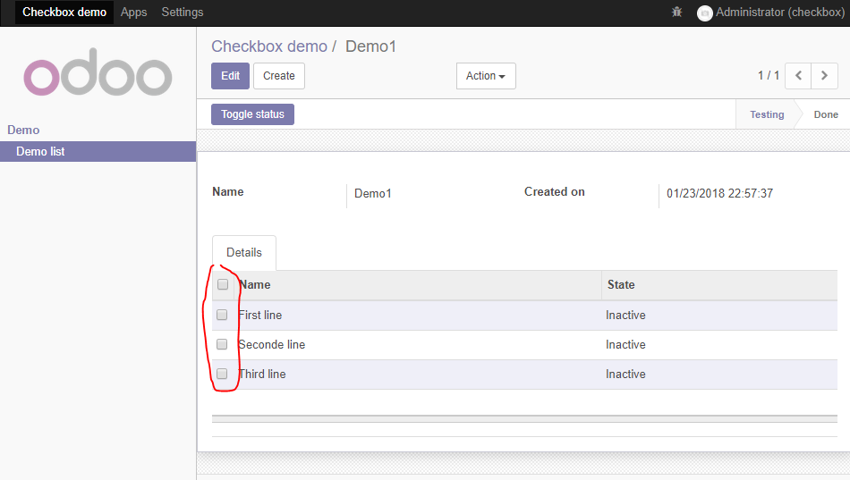

<section class="oe_container">
    <div class="oe_row oe_spaced">
        <h2 class="oe_slogan" style="color:#875A7B;">Put checkbox into One2many list</h2>
        <div class="text-center oe_mt32">
            
        </div>
        <h3 class="oe_slogan">Demo</h3>

        <div class="row">
            <h4 style="text-align: center;">
			<span> <a href="https://youtu.be/VAOS16jglf4" target="_blank"
                      class="btn btn-sm btn btn-primary" style="position: relative; overflow: hidden;"><span
                    class="o_ripple" style="height: 240px; width: 240px; top: -110px; left: -61.5px;"></span><i
                    class="fa fa-youtube-play"></i> Click here for the demo video</a>
		</span></h4>
        </div>
        <div class="text-center oe_mt32">
            <!--<video width="70%" height="70%" controls>-->
            <!--<source src="https://www.odoo.com/openerp_website/static/src/video/wbuilder/Editing.mp4"-->
            <!--type="video/mp4">-->
            <!--Your browser does not support the video tag.-->
            <!--</video>-->
        </div>

        <h2 class="oe_slogan" style="color:#875A7B;">How to use</h2>
        <p>Completed code is available in demo module which is included when you download this module</p>
        <p>Main steps:</p>
        <p>1. Explicitly define widget in your one2many field:</p>
        <pre style="width: 80%;">&lt;field name="your_o2m_field" <strong>widget="one2many_checkbox"</strong>&gt;
    &lt;tree&gt; ... &lt;/tree&gt;
&lt;/field&gt;</pre>

        <p></p>
        <p>2. When button is clicked, selection data will be availble in <code>context</code></p>
        <pre style="width: 80%;">@api.multi
def button_toggle_status(self):
    self.ensure_one()
    context = self._context
    # Validation is skipped for brevity
    selection = context['o2m_selection']
    # do things with selection data</pre>

        <p></p>
        <h2 class="oe_slogan" style="color:#875A7B;">What's new</h2>
        <h4>Version 11.0.2</h4>
        <p>
            <ul>
                <li>Fix: Prevent form dialog opening when 'editable="..."' is declared. Thanks Igor Vinnychuk for his feedback.</li>
            </ul>
        </p>

        <h4>Version 11.0.1</h4>
        <p>
            <ul>
                <li>Fix navigation in form (Pressing Tab and Shift + Tab to change focus of fields)</li>
            </ul>
        </p>
    </div>
</section>